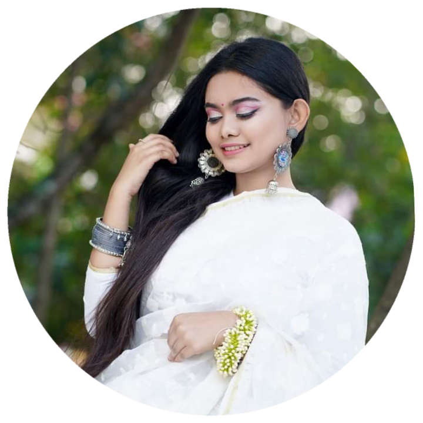
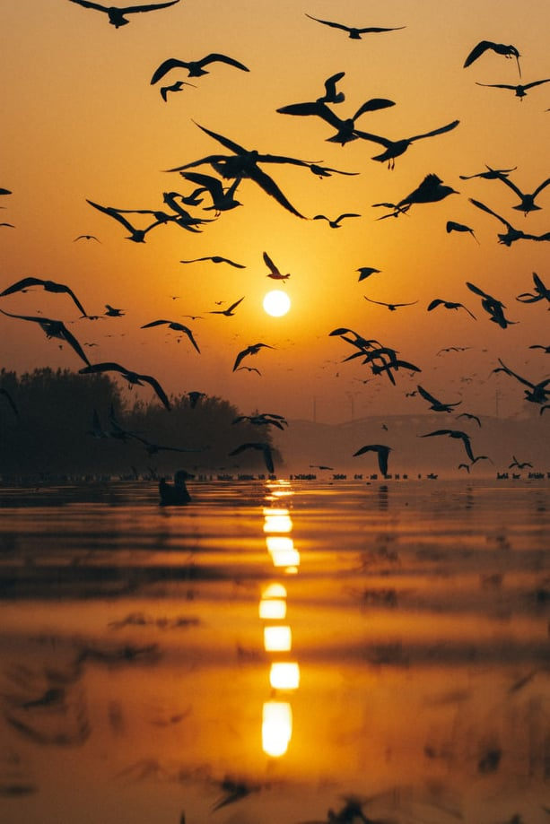
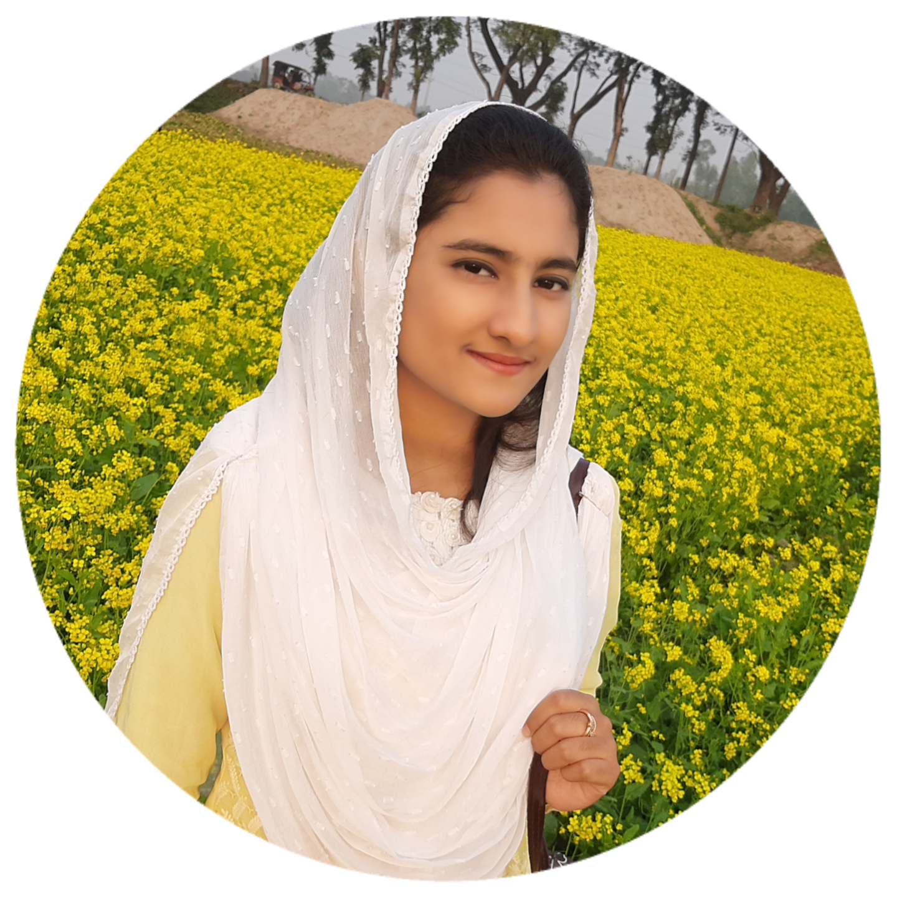

NAME:Jannatul Ferdush
DATE OF BIRTH:9 September 2003
BLOOD GROUP:B(+)

A short poem written by Ifty:
ডানায় ঢাকা অংশুমান
-Jannatul Naim Ifty.
চাতক পাখির মতো মেলেছি ডানা,
ভুলে যেতে চাই সকল জানা অজানা।
পড়ন্ত এই বিকেলে ডুবছে অংশুমান,
ভূমিতে এই যে এই খরস্রোতা বহমান।
আসবে আমার শুভ সুন্দর দিন,
সকল দুঃখ হবে দূর ব্যার্থতা হবে ক্ষিণ।
ডানা আজ আমি দিয়েছি মেলিয়ে,
তেপান্তরের সেই সবুজ মাঠ ছাড়িয়ে।
ধরবো সেই সোনালি সুখকে অতিদ্রুত,
অর্জন না কর অবদি হবো না আমি ক্ষ্যাতো।
My opinion about Ifty:
Ifty is very good as a girl and very good as a friend. However, most of the time Ifty is confused about herself. She has no confidence in her decision. Ifty is a very sweet girl. Ifty smiles most of the time.

NAME:Jannatul Ferdous
DATE OF BIRTH:25 June 2003
BLOOD GROUP:AB(+)
A short poem written by Ruhani:
দৃশ্যান্তর
ভোরের মেঘের আরাল থেকে সূর্য
কিরণের ছায়া মেখে উষ্ণতার আলো
ভেদ করে এ যেন এক নতুন তেপান্তর
কল্পনার জগতে জল্পনার ভাবনায় এ শুধু এক
............মনোরম দৃশ্যান্তর........
সাগরের ঢেউ এর জলপ্রপাতে
মুক্ত ঝিনুকের শংখ ভাসে
যার প্রতিচ্ছবির নেই কোনো
প্রতিরুপ অন্তর এ যেন সেই
........সর্গীয় দৃশ্যান্তর.........
একটা সময় হয়তো থাকবে না জনমানব
থাকবে না কোনো পাখির কলরব রয়েযাবে শুধু
.....তারই কীর্তি সার্থক মনান্তর.......
যাকে পৃথিবী আকড়ে ধরে বলবে
.........সভ্যতার দৃশ্যান্তর.......
My opinion about Ruhani:
Ruhani is a beautiful girl like her name. Her demeanor is as beautiful as her name. She is very witty. Ruhani is good at writing poetry. She loves to smile. Ruhani can dedicate herself to her dreams. Ruhani loves to dream. She does all her work very efficiently.